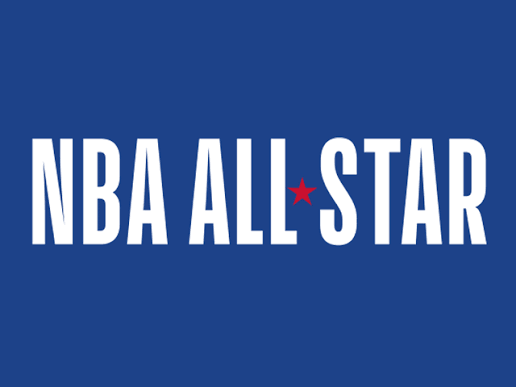
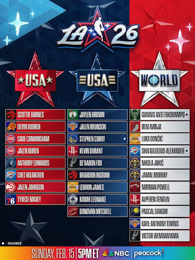

A National Basketball Association All-Star Game ( NBA ) által minden februárban megrendezett éves all-star mérkőzés , amelyen a liga 24 sztárjátékosa vesz részt .
2022 óta február harmadik vasárnapján rendezik meg, ugyanazon a napon, amikor a Daytona 500-at általában a Super Bowl utáni héten rendezik . Ez az NBA All-Star
Weekend kiemelt eseménye ,
amely egy háromnapos, péntektől vasárnapig tartó esemény. Az All-Star mérkőzést először 1951. március 2-án játszották a Boston Gardenben .

Minden csapat kezdőcsapatát szurkolói, játékos- és médiaszavazások kombinációjával választják ki, míg a vezetőedzők a tartalékokat választják ki ,
hét játékost a saját konferenciájukból, így mindkét csapatnak 12 fős a névsora.
Az edzők nem szavazhatnak a saját játékosaikra. Ha egy kiválasztott játékos sérülés miatt nem tud részt venni, az NBA biztosa választja ki a helyettesét.
